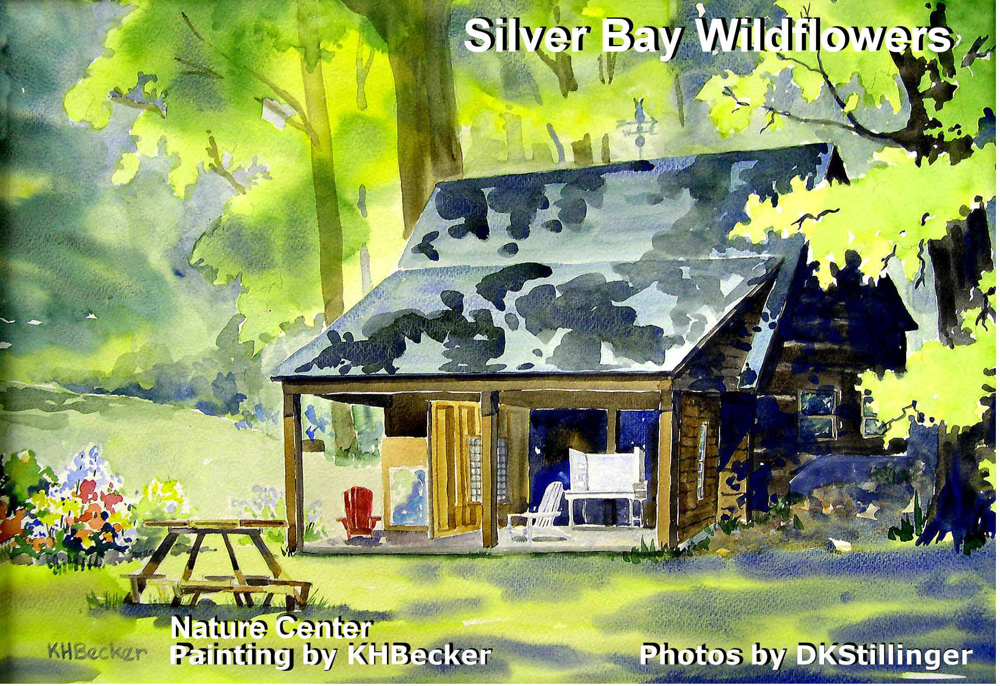

87 Silver Bay Road
Silver Bay, NY 12874
www.silverbay.org
Wildflowers in the Silver Bay area
|
Silver Bay YMCA
87 Silver Bay Road Silver Bay, NY 12874 www.silverbay.org |
Silver Bay Flowers
Wildflowers in the Silver Bay area |
|
 Thanks for your interest! My name is Dot Stillinger. For many years I have been a summer employee in the Nature Program of the Silver Bay YMCA in Silver Bay, NY, on Lake George near Hague. Dr. Thomas Lord, professor of biology at Indiana University in Pennsylvania and head of the Silver Bay Nature Program encouraged my interest in learning about the wildflowers on the Y campus and in the area. As I have come to learn the names of wildflowers I have developed an interest in knowing more about their growth habits and where they like to live. Of course, the next step is advocating for their preservation. Fragmentation of habitat due to development presents a grave danger. It is remarkable that almost all of the flowers presented here were found in readily accessible locations. The diversity of plant life is exceptional in the Silver Bay area and in other areas of the Adirondacks I have explored. The wildflowers in this collection were photographed in Silver Bay and Hague, with a few from Bolton. The presentation is mostly intended for a Silver Bay audience so mysterious place references are to locations on the Silver Bay campus. WILDFLOWER EXPERTS I CONSULTED Laura Meade, Hague area wildflower expert |
(Click an image in the index for a larger image)
Alphabetic index Vol.1
Index by color Vol.1
REFERENCES
Newcomb's Wildflower Guide
Weeds of the Northeast
A Field Guide to Wildflowers of Northeastern and Northcentral North America
Manual of Vascular Plants of Northeastern United States and Adjacent Canada, Second Edition
WEBSITE US Dept. of Agriculture plant database at http://plants.usda.gov/ All plant names and native/introduced designations are from Newcomb, Cornell weed book, Gleason and Cronquist or plants.usda.gov. Where there is only one date and location on a slide, that information applies to all the photos on the slide. Naming in the index follows Newcomb. |
I'm an amateur and any mistakes in naming or of properties are mine. My intention is only to get you started in identifying plants in the Silver Bay and Lake George area. Please send corrections to dkstillinger@gmail.com. Contact me if you would like an original higher resolution photo or the PowerPoint presentation in which the slides were created. The photos may be used for non-commercial purposes without restriction; otherwise, contact me.
2025